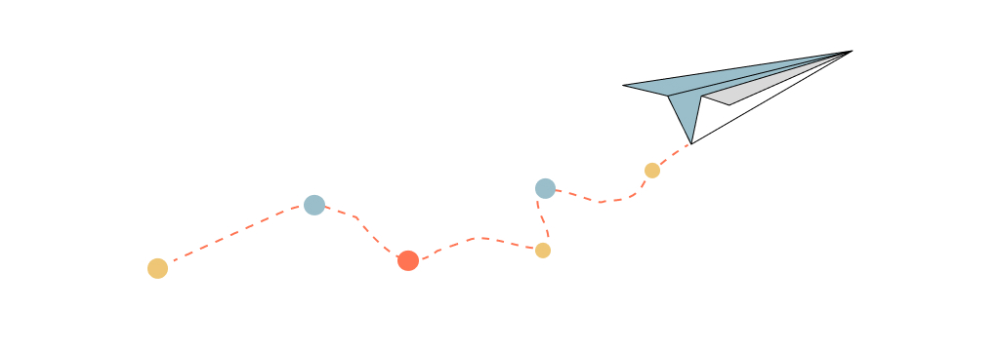

Really Simple Syndication illustrationI just added a RSS feed to this website, so if you use a RSS reader and are interested in getting updates from this site click on this link (also available in the footer)
Why RSS
My personal site has been a way to keep me more hands on, experiment with new (and old) technologies, and most of all, do it all by hand to understand how things work.
For example, this site was created without using media queries and is completely responsive, using Jekyll now as a base, which allows me to update and maintain from an iPad, without any costs other than paying for the domain. You can read more about it here.
So now, I wanted to add RSS to it, as a way to integrate a foundational technology of the web. A free and standard format where anyone can subscribe to and receive updates of my content (rarely updated, don’t judge… I’m working on it).
Less social networks, more value
I stopped using Twitter (now called X), and switched to Mastodon, with the intention to leverage a free, community driven social network. This has also resulted in less time spent in social, and a switch to consume less but longer content, from fewer people that I believe have really interesting things to say. I also started using Feedly (use as a syncing service) in combination with NetNewsWire (free native app to read across devices) to add these sources, the content that I really read, when I want to read it. Both apps work really well and you should check them out if you are looking to get into RSS.
I have learned so much from others that have made the effort to share their knowledge on the internet (Thank you!). And I still want to discover more content from people, less algorithms, less content tailored to sell me something. I want to hear and read from others like you.
This also means this that - I will try to - block this blog from being crawled by AI bots . I’m still understanding these new technologies, but I rather have my content be consumed by people who can interpret it and digest it for their own benefit, rather than it be smashed and remixed with multiple other sources to provide a different (probably better version, but not my version) of what I intended to share.
Some smarter people have written on why its cool to own your content. So don’t take my word for it.
-
Matthias Ott - Own your web
-
The Verge - Bring back personal blogging